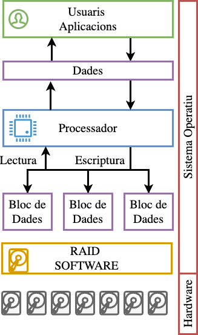
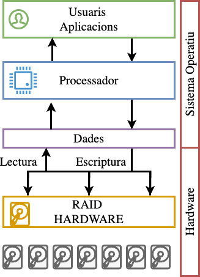
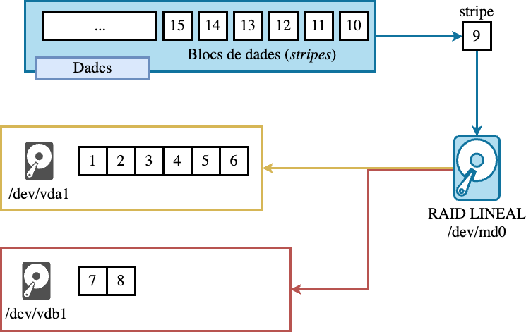
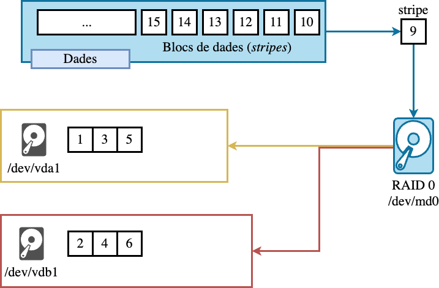
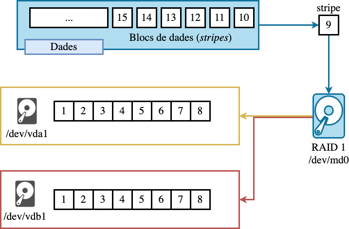
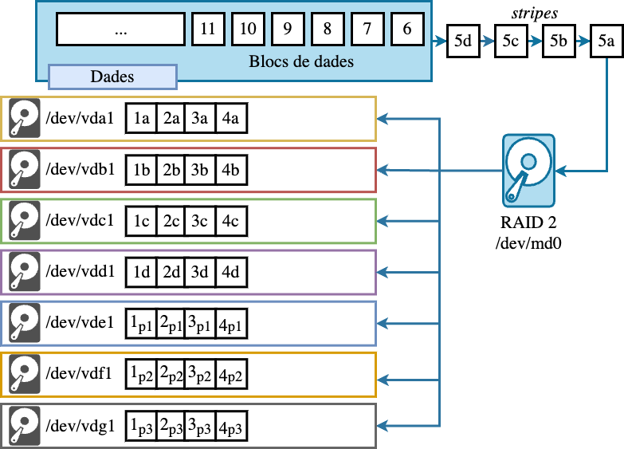
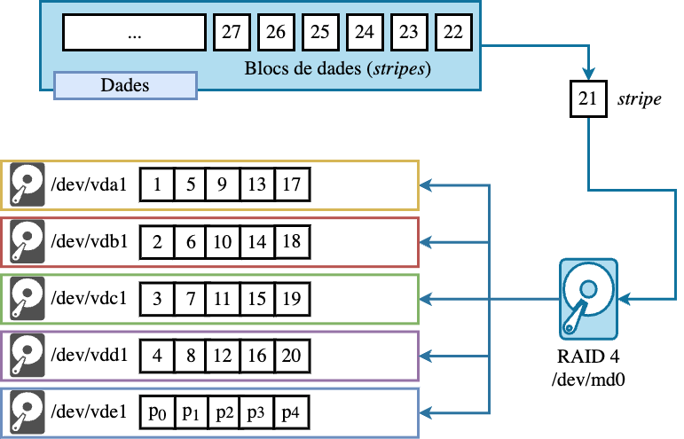
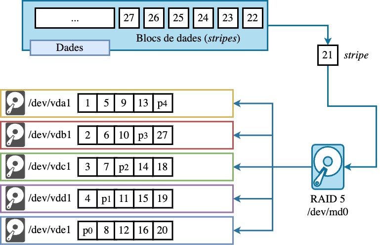

sequenceDiagram
participant A as Aplicació
participant B as Sistema de fitxers
participant C as VFS
participant D as /dev/mdX (md_mod)
participant E as Driver RAIDn
participant F as Discos físics
A->>B: Read/Write
B->>C: Operació de fitxer
C->>D: Accés a /dev/mdX
D->>E: Gestió RAID
E->>F: Accés a discos físics
Sistema de fitxers (II)
Unitat 3 · Administració i Manteniment de Sistemes i Aplicacions (AMSA)
Jordi Mateo Fornés
Introducció als RAIDs
Què és un RAID?
Un RAID (Redundant Array of Independent (originalment Inexpensive) Disks) és un conjunt de dispositius d’emmagatzematge que es combinen per a formar un sistema d’emmagatzematge únic. Aquest nou sistema d’emmagatzematge permet distribuir les dades entre els diferents dispositius que el formen i millorar-ne mètriques com la redundància o el rendiment.
Què és el rendiment i la redundància?
La redundància és la capacitat d’un sistema de continuar funcionant en cas de fallada d’un o més dispositius. Aquesta capacitat es pot aconseguir mitjançant la duplicació de les dades o mitjançant la paritat.
El rendiment és la capacitat d’un sistema de processar un volum de dades en un temps determinat. Aquesta capacitat es pot aconseguir mitjançant la distribució de les dades entre els diferents dispositius, mitjançant una tècnica coneguda com striping.
Conceptes bàsics
- Redundància: Capacitat de tolerar fallades de dispositiu (quantitat de discs que poden fallar sense perdre dades).
- Rendiment: Mesurat en IOPS i ample de banda MB/s. Depèn de la mida de stripe,nombre de discs i patró d’accés (seqüencial vs aleatori).
- Capacitat: La capacitat total del sistema és la suma de les capacitats dels dispositius que el formen, tenint en compte la redundància.
- Stripe: Un stripe és una unitat d’informació que es distribueix entre els diferents dispositius que formen el RAID. Conjunt de blocs distribuïts entre discs dins del RAID.
- Bloc: Un bloc és una unitat d’informació que es llegeix o s’escriu en un dispositiu d’emmagatzematge. (512B, 4KB…).
Diferència entre Stripe i Bloc
Amb 2 dispositius i un stripe de 64 KB, cada dispositiu guarda 64 KB alternatius d’un fitxer.
Implementacions de RAIDs
- Software RAID: Implementat a nivell de sistema operatiu.
- Avantatges: flexibilitat, transparència, no depèn del hardware.
- Inconvenients: CPU utilitzat per càlculs de paritat.
- Hardware RAID: Controladora dedicada (característiques pròpies, cache, acceleració XOR).
- Avantatges: millors rendiments en alguns escenaris;
- Inconvenients: dependència del controlador, propietat de metadades.
- Fake/BIOS RAID: Solució mixta (controladora amb firmware mínim). Pot generar problemes de portabilitat i compatibilitat.
Implementacions de RAIDs


RAID Lineal
cat lògic entre diversos dispositius d’emmagatzematge físics. JBOD (Just a Bunch Of Disks). No millora ni la redundància ni el rendiment.

RAID 0 (Striping)

- Objectiu: augmentar rendiment i capacitat (capacitat = suma de discos).
- Mida de stripe:
- Petits milloren IOPS aleatoris.
- Grans stripes milloren seqüencials.
- Si les dades són prou grans, es poden llegir/escriure en paral·lel.
- Tolerància a fallades: 0 (pèrdua total si un disc falla).
- Aplicacions: cache, fitxers temporals, tasques on la redundància no és prioritària.
RAID 1 (Mirror)

- Objectiu: redundància via duplicació exacta (mirrors).
- Lectures: potencialment paral·leles (millora), depèn del controlador.
- Escriptures: es repliquen en tots els mirrors (overhead escritura).
- Capacitat usable: 50% amb 2 discos (en general n/2 en conjunts de mirrors).
- Aplicacions: sistema root, dades crítiques on la coherència immediata és prioritària.
RAID 2

- El stripe és a nivell de bit i no de bloc com fins ara.
- Pràcticament obsolet en sistemes moderns: exigeix molts discs i accès sincronitzat.
Codis de Hamming
Els codis de Hamming són una classe de codis de correcció d’errors que es basen en la paritat. Aquests codis són molt útils per a la detecció i correcció d’errors en les dades, ja que permeten identificar i corregir errors en les dades sense necessitat de retransmissió.
- El codi de Hamming permet detectar i corregir un sol error de bit.
- S’utilitza en el RAID 2 per protegir dades a nivell de bit.
- S’intercalen bits de paritat entre els bits de dades.
- Cada bit de paritat comprova un conjunt específic de bits de dades.
- Si un bit es corromp, la combinació dels bits de paritat indica quin bit s’ha de corregir.
XOR (Operació bàsica)
La operació XOR (exclusive OR) és una operació lògica que compara dos bits i retorna un bit de resultat. El resultat és 1 si els bits comparats són diferents, i 0 si són iguals.
| A | B | \(A \oplus B\) |
|---|---|---|
| 0 | 0 | 0 |
| 0 | 1 | 1 |
| 1 | 0 | 1 |
| 1 | 1 | 0 |
Hamming(7,4) -> [0110]
| 1 | 2 | 3 | 4 | 5 | 6 | 7 | |
|---|---|---|---|---|---|---|---|
| \(p_1\) | \(p_2\) | \(d_1\) | \(p_3\) | \(d_2\) | \(d_3\) | \(d_4\) | |
| Dades | 0 | 1 | 1 | 0 | |||
| \(p_1\) | 1 | 0 | 1 | 0 | |||
| \(p_2\) | 1 | 0 | 1 | 0 | |||
| \(p_3\) | 0 | 1 | 1 | 0 | |||
| Codi | 1 | 1 | 0 | 0 | 1 | 1 | 0 |
- Els bits que són potència de 2 (\(2^k\), k=0,1, 2…) són els bits de paritat.
- Bits de paritat = XOR bits de dades amb el \(n^o\) de bit de paritat.
[0110] es codifica com [1100110]
Comprovació d’errors amb Hamming [1100110]
- Es calcula els bits de Comprovació = XOR del bits de paritat i de tots els seus bits de dades associats:
| 1 | 2 | 3 | 4 | 5 | 6 | 7 | ||
|---|---|---|---|---|---|---|---|---|
| p\(_1\) | p\(_2\) | d\(_1\) | p\(_3\) | d\(_2\) | d\(_3\) | d\(_4\) | Comprovació | |
| Codi | 1 | 1 | 0 | 0 | 1 | 1 | 0 | |
| p\(_1\) | 1 | 0 | 1 | 0 | 0 | |||
| p\(_2\) | 1 | 0 | 1 | 0 | 0 | |||
| p\(_3\) | 0 | 1 | 1 | 0 | 0 |
Tots els bits de comprovació = 0 → cap error detectat.
Comprovació d’errors amb Hamming [1100111]
| 1 | 2 | 3 | 4 | 5 | 6 | 7 | ||
|---|---|---|---|---|---|---|---|---|
| p\(_1\) | p\(_2\) | d\(_1\) | p\(_3\) | d\(_2\) | d\(_3\) | d\(_4\) | Comprovació | |
| Codi | 1 | 1 | 0 | 0 | 1 | 1 | 1 | |
| p\(_1\) | 1 | 0 | 1 | 1 | 1 | |||
| p\(_2\) | 1 | 0 | 1 | 1 | 1 | |||
| p\(_3\) | 0 | 1 | 1 | 1 | 1 |
S’ha alterat el bit 7 corresponent a d\(_4\).
Comprovació d’errors amb Hamming [0100110]
| 1 | 2 | 3 | 4 | 5 | 6 | 7 | ||
|---|---|---|---|---|---|---|---|---|
| p\(_1\) | p\(_2\) | d\(_1\) | p\(_3\) | d\(_2\) | d\(_3\) | d\(_4\) | Comprovació | |
| Codi | 0 | 1 | 0 | 0 | 1 | 1 | 0 | |
| p\(_1\) | 0 | 0 | 1 | 0 | 1 | |||
| p\(_2\) | 1 | 0 | 1 | 0 | 0 | |||
| p\(_3\) | 0 | 1 | 1 | 0 | 0 |
Els bits de comprovació = 001 → s’ha alterat el bit 1 corresponent a \(p_1\).
RAID 3 i 4

- RAID 3: striping a nivell de byte, paritat en disc dedicat; accés molt sincronitzat → bo per fitxers grans i seqüencials (p.ex. streaming).
- RAID 4: striping a nivell de bloc, paritat en disc dedicat; permet accessos independents per bloc però pateix bottleneck al disc de paritat.
- En ambdós casos la paritat dedicada pot ser coll d’ampolla per escriptura.
RAID 5

- Paritat distribuïda entre tots els discos (evita coll d’ampolla únic).
- Tolerància: 1 disc (hi ha un petit risc durant
rebuild). Probabilitat de fallada en discs grans. - Lectura: alta (com RAID0).
- Escriptura: penalització per read-modify-write (llegir bloc antic, llegir paritat antiga, escriure dades i paritat nova) — crític per a càrregues amb moltes escriptures petites.
- Capacitat: \((n-1)/n\).
- Aplicacions: sistemes de fitxers, bases de dades, servidors web.
RAID 6
- Extensió de RAID5 amb doble paritat (P i Q) → tolera 2 fallades simultànies.
- Recomanat en conjunts grans (n gran) on la probabilitat de fallada durant rebuild és significativa.
- Penalització d’escriptura més elevada que RAID5, però millor tolerància.
RAID 10
mirror + stripe. Tolerància variable segons quins discs fallen; reconstrucció molt més ràpida.
RAID 50
Stripe sobre múltiples conjunts RAID5. Millora rendiment i tolerància depenent de cada grup.
.
Comparativa de RAIDs
| Nivell | Min discs | Capacitat | Tolerància | Lectura | Escriptura |
|---|---|---|---|---|---|
| RAID 0 | 2 | 100% | 0 | Alt | Alt |
| RAID 1 | 2 | 50% (amb 2 discos) | 1 per mirror | Pot ser Alt | Mitjà |
| RAID 5 | 3 | \((n-1)/n\) | 1 | Alt | Mitjà-Baix |
| RAID 6 | 4 | \((n-2)/n\) | 2 | Alt | Mitjà-Baix (pitjor que RAID5) |
| RAID 10 | 4 | 50% (depèn) | ≥1 (segons fallades) | Alt | Alt |
| RAID 50 | 6 | aproximadament \((n-1)/n\) per grup | ≥1 per grup | Alt | Mitjà |
RAIDs a Linux
Dispositiu /dev/md*
- Linux implementa Software RAID mitjançant el subsistema del kernel MD (Multiple Device).
- El mòdul principal és
md_mod, que crea dispositius virtuals de bloc/dev/mdXsobre dispositius físics (/dev/sd*,/dev/nvme*, etc.). - Cada dispositiu MD és gestionat per un controlador de tipus
mdXque manté una taula de mapatge (metadata) amb:- nivell RAID (
level) - nombre de dispositius (
raid_disks) - superblocs (
superblock) - estat de sincronització i fallades
- nivell RAID (
Components del subsistema MD
| Component | Funció principal |
|---|---|
| md_mod | Gestor principal del subsistema MD (creació i manteniment de /dev/mdX). |
| raid0, raid1, raid5, raid6, raid10 | Mòduls del kernel que implementen la lògica específica de cada nivell RAID. |
| mdadm | Eina user-space que interactua amb el subsistema MD via ioctl i sysfs. |
| /proc/mdstat | Punt d’entrada per consultar estat de sincronització, reconstrucció i fallades. |
| /sys/block/mdX | Directori amb informació detallada i opcions de configuració per a cada mdX. |
Flux d’operacions
- Les operacions de paritat, mirroring o striping s’executen al context del kernel, sovint amb tasques asíncrones (
mdX_raid_thread). - Les metadades del RAID s’emmagatzemen al final (o inici) de cada disc com a superblock MD v1.x.
- Des del kernel 4.0 es pot utilitzar reshape per canviar el nivell RAID o afegir dispositius en viu.
Paquet mdadm
En la majoria de les distribucions de Linux, el paquet mdadm permet la creació i gestió de dispositius RAID.
El funcionament del paquet mdadm és similar en totes les distribucions de Linux. Per tant, les instruccions d’ús són similars i no importa la distribució que s’utilitzeu.
Creació de Dispositius RAIDs
Opcions Bàsiques
--create: Crea un nou dispositiu RAID.--verbose: Mostra informació detallada sobre el procés./dev/[nom]: Nom del dispositiu RAID.--level=[nivell]: RAID.--raid-devices=[nº dispositius]: Nombre de dispositius que formen el RAID.[dispositius]: Llista de dispositius que formen el RAID.
Gestió del RAID (--manage)
mdadm --manage /dev/[nom] [options] [dispositius]
--add -a : afegeix dispositius posteriors a l'array
--re-add : els dispositius posteriors són reafegits si eren
: membres recents de l'array
--remove -r : elimina els dispositius posteriors, que no han d'estar actius
--fail -f : marca els dispositius posteriors com a defectuosos
--set-faulty : igual que --fail
--replace : marca el(s) dispositiu(s) per ser reemplaçat(s) per recanvis.
: Un cop completat el reemplaçament, el dispositiu es marcarà
: com a defectuós
--with : indica quin recanvi hauria de preferir un '--replace' anterior
--run -R : inicia un array parcialment construït
--stop -S : desactiva l'array, alliberant tots els recursos
--readonly -o : marca l'array com a només lectura
--readwrite -w : marca l'array com a lectura i escripturaInformació i Monitoratge del RAID
Les opcions --detail i --examine permeten obtenir informació detallada sobre un dispositiu RAID. La principal diferència entre ambdues opcions és que --examine mostra informació més detallada sobre el dispositiu.
La opció --monitor permet monitorar un dispositiu RAID en temps real. Obtenint informació sobre els esdeveniments que es produeixen en el dispositiu i ens permet prendre accions en conseqüència.
Ensamblatge --assemble
- Permet muntar un array RAID existent.
- Aquesta opció no crea un nou array, sinó que reuneix un array existent a partir dels dispositius que especifiquem.
- Cada cop que el sistema s’inicia, aquesta opció s’executa al kernel. Escaneja els discs, busca els superblocks i reconstrueix tots els arrays per a nosaltres.
Initramfs i RAID
En entorns amb RAID, initramfs inclou els binaris i la configuració necessaris per gestionar els arrays RAID. Durant la fase d’arrencada, es fa servir la comanda:
Detecta i munta automàticament tots els arrays definits a /etc/mdadm/mdadm.conf. Això assegura que les particions RAID estiguin operatives abans de muntar la partició root i iniciar el sistema operatiu.
A més, initramfs pot incloure scripts per comprovar la integritat dels dispositius RAID i gestionar fallades de discs durant l’arrencada, assegurant un boot fiable en entorns amb mirroring (RAID1).
Actualització amb --grow
Aquesta opció permet actualitzar un dispositiu RAID. Per exemple, canviar el RAID, augmentar el nombre de dispositius o canviar la mida dels blocs.
- Situació I: En un RAID5 format per 3 discs, ens pot interessar al cap del temps afegir un disc més.
- Situació II: En un RAID5 format per 4 discs, ens pot interessar al cap del temps canviar el RAID a 6.
- Situació III: En un RAID5 format per 4 discs, ens pot interessar al cap del temps canviar la mida dels blocs.
Compte!
Amb aquestes operacions, el sistema pot quedar inutilitzat. És recomanable fer una còpia de seguretat abans de realitzar aquestes operacions.
Aturar i Eliminar un RAID
Per aturar un RAID, podem utilitzar l’opció --stop del mode --manage de mdadm. Aquesta opció desactiva l’array i allibera tots els recursos associats.
/etc/mdadm/mdadm.conf
Aquest fitxer conté informació que permet al sistema reconèixer i muntar automàticament els arrays RAID durant l’arrencada i també proporciona paràmetres per a la creació, monitorització i manteniment dels arrays.
ARRAY: indica un dispositiu RAID gestionat per mdadm./dev/mdX: dispositiu de bloc que representa l’array RAID.UUID: identificador únic de l’array RAID, utilitzat per assegurar que el sistema connecta correctament les particions corresponents encara que canviïn els noms dels dispositius físics (per exemple, vdb1 esdevé vdc1).
Casos Pràctics
El RAID 0 ofereix una major velocitat de lectura i escriptura, però no proporciona cap mena de redundància. Una fallada en un disc faria que es perdessin totes les dades. Per tant, no és una bona opció per a un sistema root.
El RAID 1 ofereix redundància. No obstant això, no millora la velocitat d’escriptura. Aquest RAID és una bona opció per a un sistema root, ja que assegura la integritat de les dades.
Cas Pràctic (I)
Assumeix que vols configurar un RAID per configurar la partició root del teu servidor Debian. quin RAID recomanaries i que t’aportaria?
El RAID 5. Aquest RAID ofereix redundància i una millora en la velocitat de lectura. No obstant això, requereix un mínim de tres discs i la velocitat d’escriptura pot veure’s afectada per les operacions de paritat. Aquest RAID pot ser una bona opció per a emmagatzemament de dades, però pot ser massa complex per a un sistema root.
El RAID 10 combina les característiques del RAID 1 i del RAID 0, oferint tant redundància com una millora en la velocitat de lectura i escriptura. Aquest RAID pot ser una bona opció per a un sistema que requereixi un alt rendiment, però pot ser massa costós per a un sistema root.
Cas Pràctic (II)
Assumeix que vols configurar un servidor amb dos discs SATA per fer renders de vídeo on l’objectiu principal es millorar el rendiment i la capacitat d’enmagatzemament temporal. Quin RAID recomanaries?
- Com únicament es disposa de dos discs, el RAID 0 seria la millor opció. Aquest RAID millora el rendiment i la capacitat d’emmagatzemament temporal, ja que les dades es divideixen i s’emmagatzemen en els dos discs de forma simultània. No obstant això, cal tenir en compte que el RAID 0 no ofereix cap mena de redundància. Per tant, si un dels discs falla, es perdran totes les dades. S’haurien de fer còpies de seguretat regulars per evitar la pèrdua de dades.
Cas Pràctic (III)
Assumeix un servidor de bases de dades on la integritat de les dades es crítica i les transaccions han de ser ràpides. Quin RAID recomanaries?
- En aquest cas, el RAID 10 seria la millor opció. Aquest RAID combina les característiques del RAID 1 i del RAID 0, oferint tant redundància com una millora en la velocitat de lectura i escriptura. Això és important per a un servidor de bases de dades on la integritat de les dades és crítica i les transaccions han de ser ràpides.
Exercici
- Configuració d’un RAID 1 a AlmaLinux amb una instal·lació neta.
- Migració de
/homea un RAID 1 en un sistema Debian existent. - Simulació de fallada d’un disc en un RAID 5.
- Migració d’un sistema
legacya un sistema amb RAIDs.
That’s all
Take Home Message
- RAID manté les dades, però la bona administració manté el servei.
- La redundància no és seguretat si no s’ha provat mai l’arrencada.
- Configurar RAID és fàcil; garantir que arrenca quan els discs fallen és el camí de l’administrador.
- RAID no és substitut de les còpies de seguretat.


Unitat 3 · Administració i Manteniment de Sistemes i Aplicacions (AMSA) 🏠